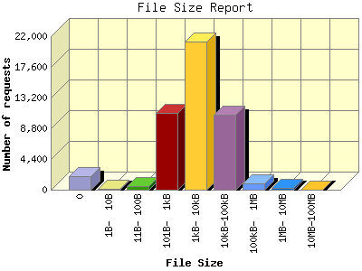

Report generated by Analog 6.0 and Report Magic 2.21
|
Web Server Statistics for "Harish Narayanan (hnarayan) - August 2007" Report generated by Analog 6.0 and Report Magic 2.21 |
The File Size Report categorizes the size of the file being requested. This can be useful in optimizing site performance. (Remember that on a 28.8Kps modem, it will take on average of 40 seconds to download 100Kb of data.)

| File Size | Number of requests | Number of bytes transferred | Percentage of the bytes | Percentage of the requests | |
|---|---|---|---|---|---|
| 1. | 0 | 1,884 | 0.000 B | 0.00% | 4.05% |
| 2. | 1B- 10B | 176 | 880.000 B | 0.00% | 0.38% |
| 3. | 11B- 100B | 497 | 23.429 KB | 0.00% | 1.07% |
| 4. | 101B- 1kB | 10,955 | 4.267 MB | 0.28% | 23.54% |
| 5. | 1kB- 10kB | 21,162 | 88.304 MB | 5.84% | 45.48% |
| 6. | 10kB-100kB | 10,683 | 283.176 MB | 18.72% | 22.96% |
| 7. | 100kB- 1MB | 943 | 329.807 MB | 21.80% | 2.03% |
| 8. | 1MB- 10MB | 230 | 702.931 MB | 46.46% | 0.49% |
| 9. | 10MB-100MB | 4 | 104.374 MB | 6.90% | 0.01% |
This report was generated on October 30, 2007 16:30.
Report time frame August 1, 2007 00:06 to August 31, 2007 23:56.
| Web statistics report produced by: | |
 Analog 6.0 Analog 6.0 |  Report Magic 2.21 Report Magic 2.21 |